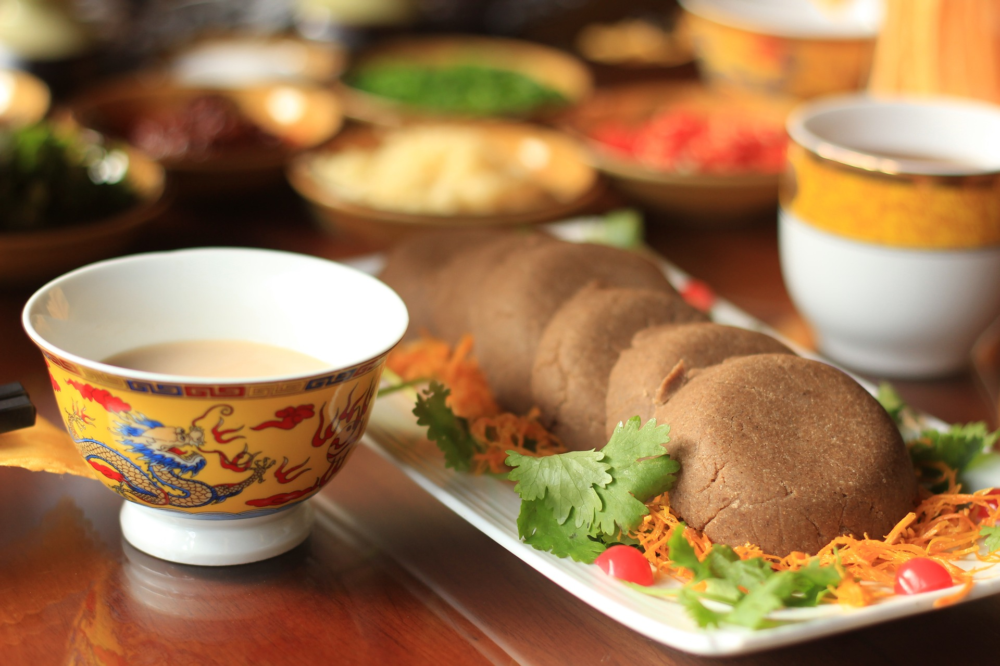
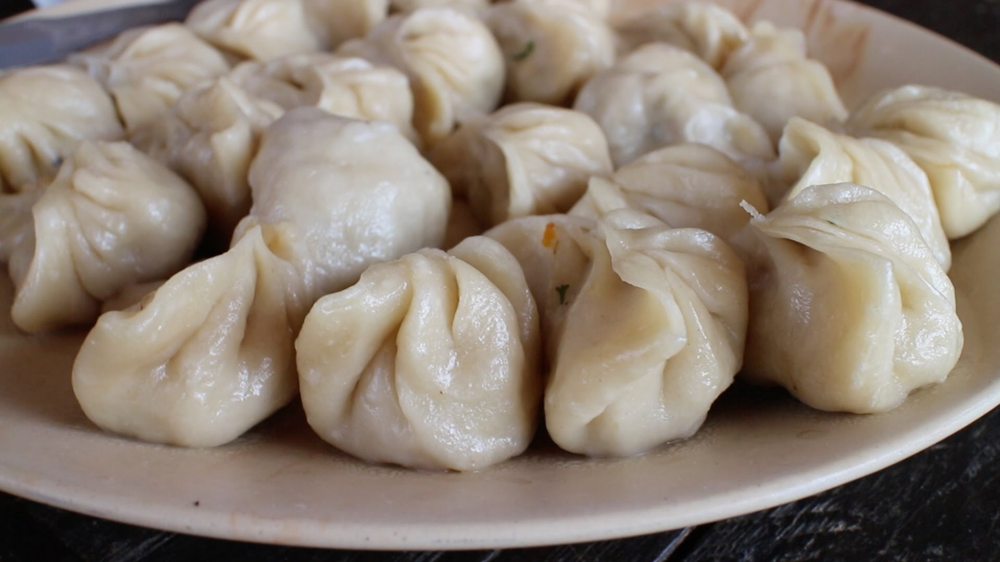
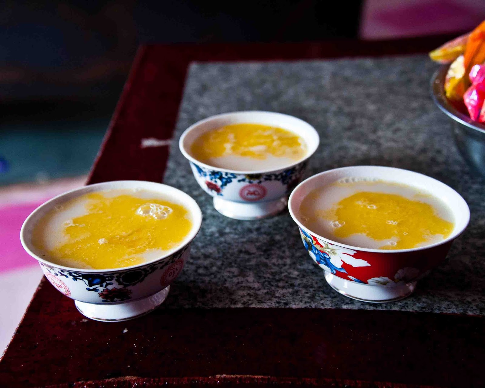

A causa de la gran altitud i les dures condicions ambientals del Tibet, la seva gastronomia és molt rica en calories, proteïnes i greixos. L’ alimentació diària dels nòmades tibetans es basa en dos aliments molt energètics: la tsampa, que consisteix en farina d’ordi torrada, i el te tibetà (chas), que és te amb mantega de iac i sal. Els ingredients s’adapten a les condicions d’altura en què se situa el territori del Tibet, mengen alguns cereals com l’ordi. Es pot dir que l’alimentació diària és la típica del poble tibetà és nòmada i es fonamenta en dos aliments molt energètics: la tsampa, que consisteix en farina d’ordi torrada i el te tibetà (chas), que és el te amb mantega elaborat amb la llet de iac i sal o també anomenat te salat. Altres plats més elaborats són, per exemple, el thug-pa (sopa de verdures, carn i pasta) i els momos (pasta amb forma de ravioli d’una mida més gran que una croqueta farcida de carn o verdura, fets al vapor), així com els khabse (galetes). Igualment es menja carn de iac, ovella o cabra. També aprofiten la llet per fer, iogurt batut i una mica de mel amb carn de bou. A les grans ciutats tibetanes i ciutats els restaurants solen servir menjar típic a l’estil cuina Sichuan. A l’oest del país es pot veure avui dia una fusió d’estils en els plats, que són molt populars, com ara carn de iac i patates fregides. No obstant això alguns petits restaurants serveixen encara menjar tradicional tibetana que persisteix fora de les grans ciutats, així com en l’àmbit rural.

Tsampa (Per a temps de escassesa)
El tsampa és una antiga recepta originària del Tibet de boletes de grans i cereals torrats i mòlts amb mel, altament energètiques i molt alimentàries. En preparació del que pugui succeir en els anys vinents, una de les necessitats més importants és l’aliment. Aquest ha d’ocupar el menor espai, poder-se preservar el major temps possible i aportar el nombre més gran de nutrients i energia possible.
Momos (Crestes vegetals tibetanes)
Els momos són el plat típic del Tibet. Unes humils crestes, parents properes dels mantis, gyozas, jiaozis o buuz d’altres parts d’Àsia. Es preparen al vapor o fregides, amb un farciment vegetal o de vegades de carn de búfal o pollastre. A la XIV Dalai Lama li encanten d’espinacs i formatge fresc. Els tibetans són molt aficionats al consum de te i causa de la duresa del clima i l’altitud és que han creat la seva pròpia i única manera de beure i preparar el te. Una de les maneres de consumir el te que tenen en aquesta regió és beure-ho barrejat amb mantega, sal i llet, fent una cosa que ells anomenen Po Cha. Aquesta és una beguda ideal per al fred. Es barreja amb el te negre convencional. La mantega es fa amb llet de iac, que al Tibet es diu dri, a diferència dels mascles, iac. Els yaks són els animals més importants en la vida tibetana, pedra angular de l’existència de nòmades i agricultors. Beure te de mantega és una rutina normal de la vida tibetana. Comencen a beure al matí i poden beure moltes tasses al llarg del dia. Es calcula que els nòmades beuen amb freqüència al voltant de fins a 30 tasses diàries. També s’ofereix com a beguda d’hospitalitat als hostes a qui es torna a omplir la tassa permanentment abans que acabin de beure.
Sha Balep. Es tracta d’un pa farcit de carn amb forma semicircular o circular la qual té diferents variants depenent de la regió i sol ser fregit.
Balep korlun. Es tracta d’un pa pla del Tibet Central que és cuinat majoritàriament en una paella en comptes d’en un forn.
Tingmo. És un tipus de pa al vapor, una espècie més pesada del pa xinès boazi.
Thenthuk. És un tipus de sopa feta de fideus i diverses verdures. Thenthuk seria un tipus de thukpa.
Shab Treball. És un saltat de carn barrejat amb api, pastanaga i xili verd fresc.
Gyurma (Juema). Són botifarres tibetanes farcides amb sang de iac o ovella i ordi torrada o arròs.
De-Thuk. És un tipus de sopa que inclou iac o ovella juntament amb arròs, diferents tipus de formatge tibetà i Droma, que és un tipus d’arrel tibetà.). Són botifarres tibetanes farcides amb sang de iac o ovella i ordi torrada o arròs.
Tsam-thuk. És també un tipus de sopa que fa servir trossos de carn de iac o ovella, així com farina d’ordi torrada i una varietat de formatges tibetans.
Dre-si. El un plat dolç tibetà que fa servir arròs i es cuina amb mantega sense sal i una barreja de panses de raïm, Droma (una arrel en forma de carabassa que es troba al Tibet), dàtils i altres fruits secs. Normalment aquest plat se serveix només durant el Losar, l’any nou tibetà.
Khapsey. Galetes o melindros tibetans fregits que normalment es fan durant celebracions com el nou any tibetà o en els casaments. Aquestes galetes es fan de diferents formes i diferents textures. Algunes d’elles es ruixen amb sucre mòlt.
Masan. És una espècie de pastís fet amb tsampa (un tipus de farina), glaçons de formatge o mató, mantega de iac, sucre moreno i aigua.
Xogoi Momo. És un puré de patates amb forma de boletes amb un farcit de carn picada i arrebossat amb pa ratllat.